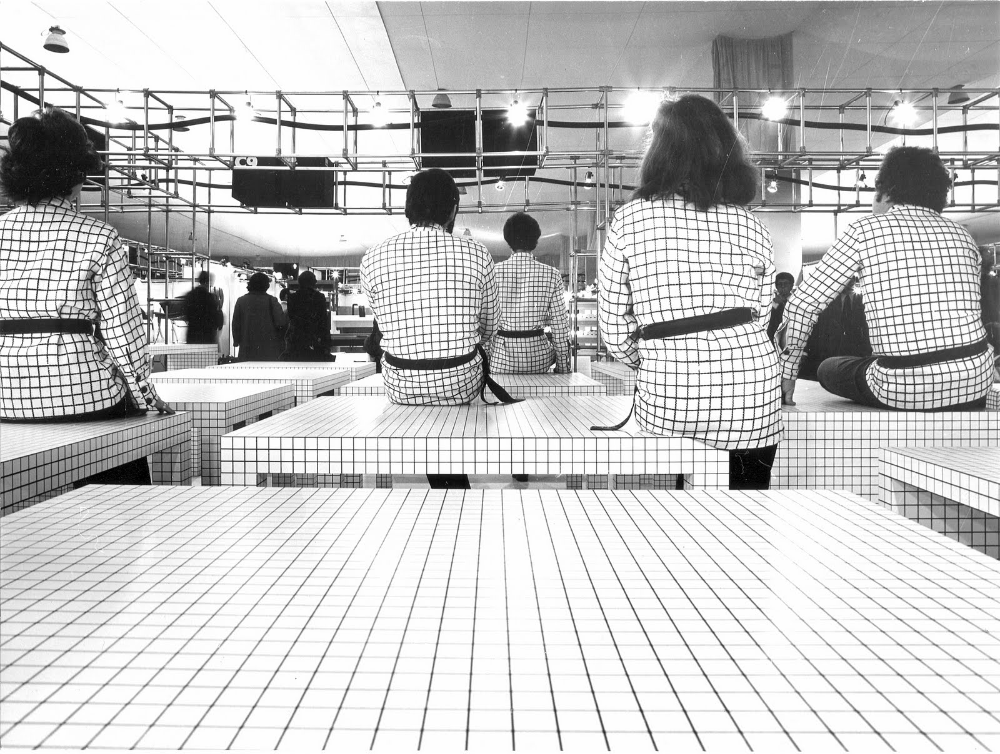
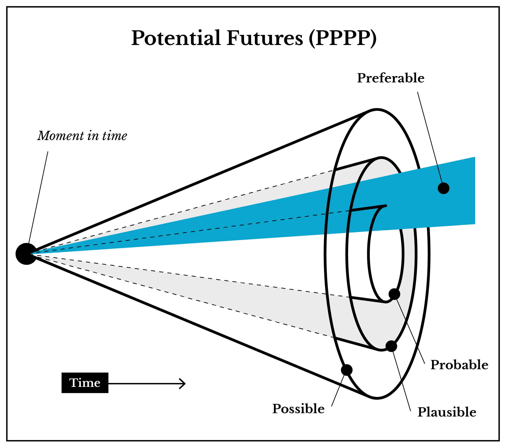

Critical design
In 2009, Dr. Bruce M. Tharp and Stephanie M. Tharp published a blog post called "The 4 Fields of Industrial Design: (No, not furniture, trans, consumer electronics, & toys)." in an attempt to categorize design intentions. [1] As described in a followup post published on Dec. 9, 2015, "What is Discursive Design?," discursive design is described as the practice of designing for the purpose of provoking thought.
This, of course, demands a purposeful shift—the designed object’s primary role is no longer utilitarian, aesthetic or commercial. Instead it is mostly (though certainly not exclusively) a thought catalyst. The product is given form and function so that it can communicate ideas—this is the goal and the measure of success. Rather than tools for living and doing, these are tools for thinking. [2]
We find a similar definition from Dunne and Raby's, Design Noir: The Secret Life of Electronic Objects:
Critical design is related to Haute couture, concept cars, design propaganda, and visions of the future, but its purpose is not to present the dreams of industry, attract new business, anticipate new trends or test the market. Its purpose is to stimulate discussion and debate amongst designers, industry and the public about the aesthetic quality of our electronically mediated existence.[9]
The Uncomfortable, a collection of bad product designs created by architect Katerina Kamprani, explores what would happen if the fundamental functional properties of products were altered or thwarted. The resulting collection of objects manages to create objects that are both serious and funny.
My goal is to deconstruct the invisible design language of simple everyday objects and tweak their fundamental properties in order to surprise you and make you laugh. But also to help you appreciate the complexity and depth of interactions with the simplest of objects around us.
Katerina Kamprani [10]
Speculative design
If discursive design is "design as thought catalyst," then speculative design is design as possibility catalyst—that is, design for the purpose of imagining new possible futures—enabling ourselves to have real conversations about what kind of world we want to build. In the 1960s, an architecture group, called Superstudio, imagined new kinds of radical architectural design, which helped push design from problem-solving to problem-seeking. This form of design has autonomy from the constraints of the market, and has the benefit of self-reflection.
And, whereas traditional design actually legitimizes the status quo, speculative design envisages and anticipates the future, at the same time helping us to understand and re-think the world of today. This approach is most often based on the question “what if?”, examining the interrelation between potential changes in the technological development and social relations. [3]
Steven M. Johnson describes himself as "an occasional inventor, whimsicalist and possibilitist." He publishes illustrations of absurd inventions that are hilarious and thought-provoking commentary while yet somehow retaining plausibility.
Potential Futures and the Theory of Change
Fundamentally, design—the process of bringing into existence the unknown or invisible—envisions the future.
– Sharon Poggenpohl
Because speculative design is concerned about the future, it is helpful for us to consider something called the Theory of Change, which can help you map outcomes and causalities. Theory of change is concerned with figuring out what choices can to be made in order to achieve positive future outcomes. Let's consider The "Three 'Laws' of Futures," as outlined by Joseph Voros, that state (1) the future is not predetermined, (2) the future is not predictable, and (3) future outcomes can be influenced by our choices in the present. Voros' publication, A Primer on Futures Studies, Foresight and the Use of Scenarios is well worth a read-through, and will better describe the logic behind these "laws." Essentially, they point to the idea that each present moment is the culmination of past choices, and therefore, future outcomes can be regarded as something to steward with thoughtful intent.
The New York Times article , We Aren't Built to Live in the Moment, argues how the uniquely human skill of thinking about future events is a major driving force behind decisions. From the article:
"This discovery explains what happens when your mind wanders during a task: It’s simulating future possibilities."
The four classes of potential futures include Probable, Plausible, Possible, and Preferable (referred to as PPPP). In future design, preferable outcomes are located within the realm of probable and plausible. It is most likely not very useful to imagine outside of possible. Possible, in this case, would preclude the idea of something like a square-shaped circle or a magical power—those things are impossible (with our current understanding of the laws of nature) and working such a thing into a work that tries to imagine the future is not very helpful or useful.
Beyond this lies the zone of fantasy, a zone we have very little interest in. Fantasy lives in its own world, with very few links if any to the world we live in. It is of course valuable, especially as a form of entertainment, but for us it is too far removed from how the world is." [8]

Applying Theory of Change:
Theory of change is a rigorous yet participatory process whereby groups and stakeholders in a planning process articulate their long-term goals and identify the conditions they believe have to unfold for those goals to be met. These conditions are modeled as desired outcomes, arranged graphically in a causal framework. [6]
I've adapted this list from Theory of Change Basics: A Primer on Theory of Change by Taplin and Clark.
- Identify long-term goals and related assumptions.
- Map backwards from long-term goal: Identify preconditions and requirements.
- Note your assumptions of how the system works; articulate your rationale for why outcomes are necessary preconditions to other outcomes.
- Develop strategic interventions to bring about your desired change.
- Develop indicators to measure successfulness of outcomes; use them to assess the performance of your initiative.
- Quality review should answer three basic questions: Is your theory 1) plausible, 2) “doable” (or feasible), and 3) testable?
- Produce a narrative to communicate the logic of your initiative.
If you look carefully at this list, you an also simultaneously locate a place for each step within the Double Diamond design process used throughout this course, further illustrating it's compatibility with other design processes. You can start to see where those steps, particularly in step 6, begin to line up within the PPPP model (described by Voros).
Citation
- http://www.core77.com/posts/12232/the-4-fields-of-industrial-design-no-not-furniture-trans-consumer-electronics-toys-by-bruce-m-tharp-and-stephanie-m-tharp-12232. Accessed Oct 25, 2016
- http://www.core77.com/posts/41991/What-is-Discursive-Design. Accessed Oct 25, 2016
- http://speculative.hr/en/introduction-to-speculative-design-practice/. Accessed Dec 29, 2016
- http://abyss.uoregon.edu/~js/21st\_century\_science/lectures/lec14.html. Accessed Dec 29, 2016
- http://thinkingfutures.net/wp-content/uploads/2010/10/A\_Primer\_on\_Futures\_Studies1.pdf. Accessed Dec 29, 2016
- http://www.theoryofchange.org/wp-content/uploads/toco\_library/pdf/ToCBasics.pdf. Accessed Dec 30, 2016
- Superstudio image. http://hughpearman.com/fictions-and-mythologies-how-architecture-writes-itself/
- Dunne, Anthony. Raby, Fiona. Speculative Everything: Design, Fiction, and Social Dreaming. 2013. Page 4.
- Dunne, Anthony. Raby, Fiona. Design Noir: The Secret Life of Electronic Objects. Birkhäuser Basel. 2001.
- https://www.theuncomfortable.com/about/. Accessed Jan 20, 2018